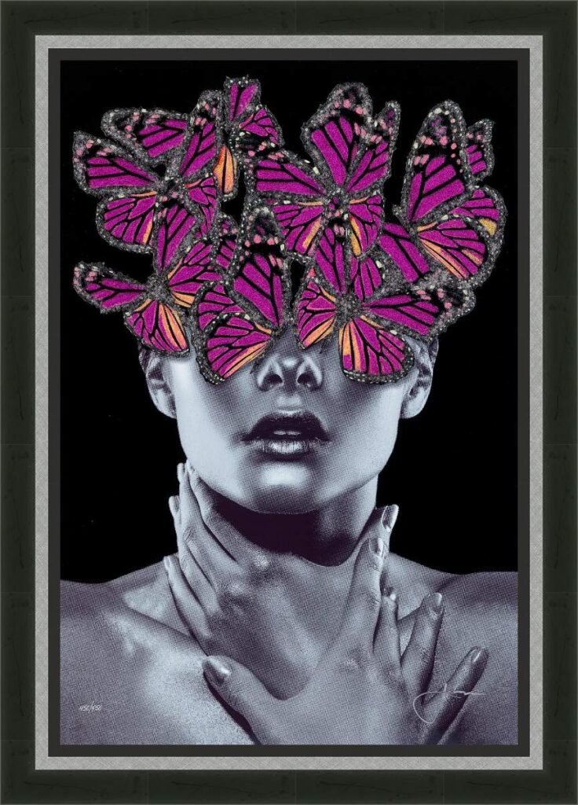

Beautiful Struggle Silver Face

Description:
In “Beautiful Struggle,” Jay Bonadio delivers a poignant visual metaphor for the internal conflicts that shape who we are. The artwork centers on a monochromatic, halftone portrait of a woman, her hands clutching her throat in a gesture that suggests vulnerability or perhaps the stifling of a voice. However, where her vision would be, there is an explosion of vibrant life.
A swarm of majestic, purple-hued butterflies—rendered in Bonadio’s signature crushed glass and resin—completely obscures the figure’s eyes. This striking juxtaposition interprets “struggle” not as darkness, but as a chaotic, overwhelming beauty. The butterflies symbolize metamorphosis and the chaotic nature of change, suggesting that the battles we fight within our own minds often result in the most profound growth.
The piece is a masterclass in contrast. The flat, graphic quality of the black-and-white print clashes beautifully with the high-relief, gem-like texture of the glass butterflies. Against the deep void of the black background, the shattered glass catches the light, serving as a reminder that even broken things can be assembled into something magnificent.
Artwork Details:
- Medium: Mixed Media, Crushed Glass, and Resin on Board
- Style: Pop Surrealism / Contemporary Portraiture
- Key Elements: Purple butterflies (symbolizing transformation), halftone portrait, high-contrast monochrome vs. color
- Signature: Hand-signed by the artist (Bottom Left/Right)
- Dimensions
- 24 in x 16 in
- Reg. / Lot No.
- 763780